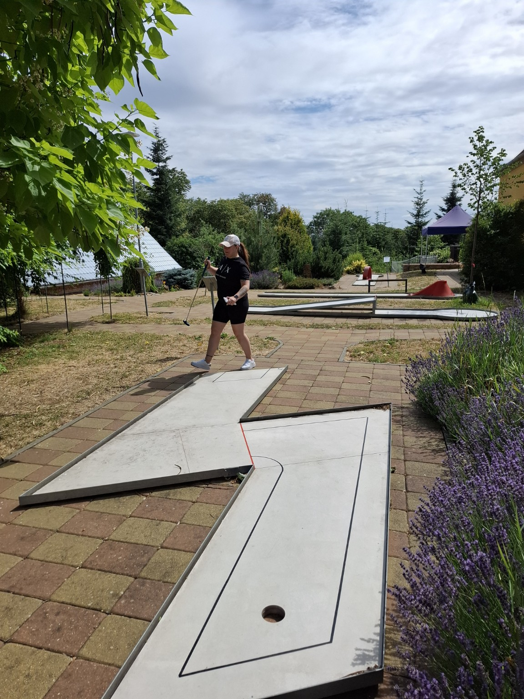
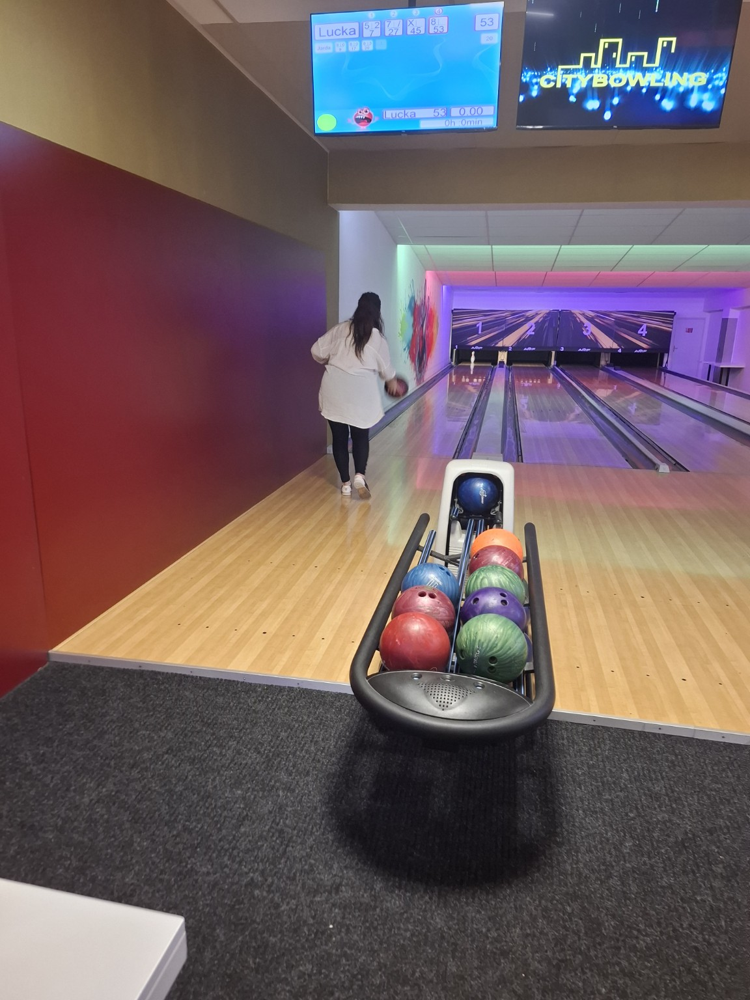
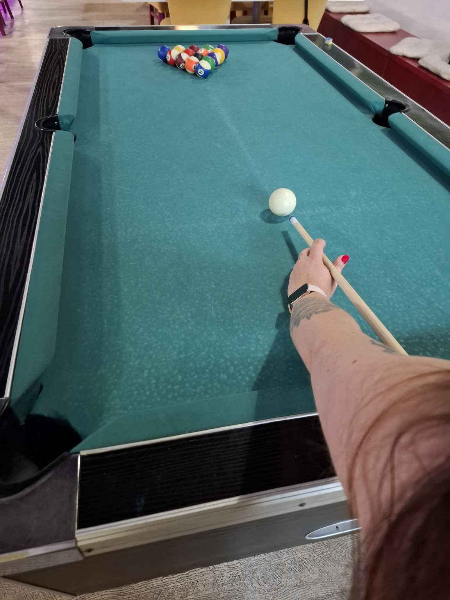

ZE ŽIVOTA
Ne všechno potřebuje plán.
Výlety jsou fajn. Dovolené ještě lepší.
Ale většina času, který spolu trávíme,
se stejně odehrává úplně obyčejně.
Poslední dobou se kvůli náročné práci Lucie
vídáme hlavně o víkendech.
O to víc se snažím, abychom si ten společný čas
vždycky udělali příjemný a oba si ho naplno užili.
Ne vždycky ale máme chuť někam vyrážet
nebo něco velkého podnikat.
Jsou totiž i víkendy, kdy Lucka jednoduše
zavelí k delšímu spánku.
Prospíme půlku soboty.
Já se samozřejmě moc nebráním.
Většinou se během týdne domluvíme,
jak bude víkend vypadat.
Buď přijedu už v pátek, nebo – bohužel pro mě – až v sobotu.
Často dopředu vymýšlím, co bychom mohli dělat
nebo kam bychom mohli vyrazit.
Jenže jelikož se spolu na všem umíme perfektně domluvit,
zjistili jsme, že vlastně ani žádný plán nepotřebujeme.
I bez něj si dokážeme udělat hezký víkend. ♡
01.
Boskovice, Brno a naše víkendy
Občas skončíme v Boskovicích. Jindy jedeme ke mně do Brna.
Když mířím do Boskovic, cestou se někdy zastavím
pro nějaké jídlo, vezmu vínko a páteční večer
necháme čistě odpočinkový.
Hrajeme Uno, Desítku nebo AZ-kvíz.
Případně skončíme u Výměny manželek
nebo nějakého hororu, u kterého se samozřejmě
ani jeden z nás rozhodně nebojí.
A když se nám o víkendu nechce sedět doma,
vždycky se něco najde.
Zajedeme třeba na menší výlet – do Lamacentra,
do Olomouce nebo prostě někam,
kam nás zrovna napadne vyrazit.
Jindy skončíme na minigolfu, bowlingu nebo biliáru.
A když se nám nechce vymýšlet vůbec nic?
Jedeme se podívat, co mají nového v nákupáku.
Což samozřejmě většinou znamená,
že se nevrátíme s prázdnou. 😄



Program se vždycky nějak najde. ♡
05.
Vejde se. Nevejde se.
O něco později jsme zase seděli spolu
a začali se úplně normálně bavit o tom,
co vlastně oba od života chceme.
A nějakým způsobem jsme se od normální konverzace
dostali až ke společnému vybírání kočárku.
Ano. Kočárku.
A protože Lucka byla přesvědčená,
že by se mi do kufru auta nevešel,
následovala samozřejmě jediná rozumná věc.
Šli jsme změřit kufr Corolly.
Já tvrdil, že se vejde.
Lucka tvrdila opak.
A tak se z obyčejného večera stalo
odborné technické měření zavazadlového prostoru
Toyoty Corolla 2020 kombi.
Protože přesně takhle vypadají důležité životní debaty u nás.
A TAKHLE NĚJAK VYPADÁME MY
Obyčejné chvíle.
Máme spolu spoustu momentů,
společných vtipů a krásných dnů.
Některé vzniknou díky výletu,
na který se těšíme několik týdnů.
Jiné vzniknou úplně náhodou na gauči,
na balkóně, při partii šipek
nebo během odborného měření kufru Corolly.
A možná právě proto mám
ty obyčejné chvíle tolik rád.
Protože nakonec vůbec nezáleží na tom,
jestli jsme někde stovky kilometrů od domova,
nebo jen sedíme večer vedle sebe.
Důležité je, že je nám spolu dobře.
Doufám, že tenhle příběh
bude pokračovat ještě hodně dlouho.
A že ať už nás čeká cokoliv,
jedna věc z našich společných dnů
nikdy nezmizí.
Úsměv. ♡
„Pokračování se právě píše…“